4 Cursos
Conheça o R: Introdução, dicas e curiosidades (Acesse)(gravação)
Introdução ao software R nas ciências agrárias e biológicas (Curso ministrado em Maio/Junho pelo google meet)
- Introdução ao software R com ênfase em ciência do solo (Curso ministrado em Julho/2019 ao laboratório de solos da UEL)
- Introdução ao software R aplicado à Agronomia (Curso ministrado em Junho/2019 ao programa de pós-graduação em Agronomia da UEL)
 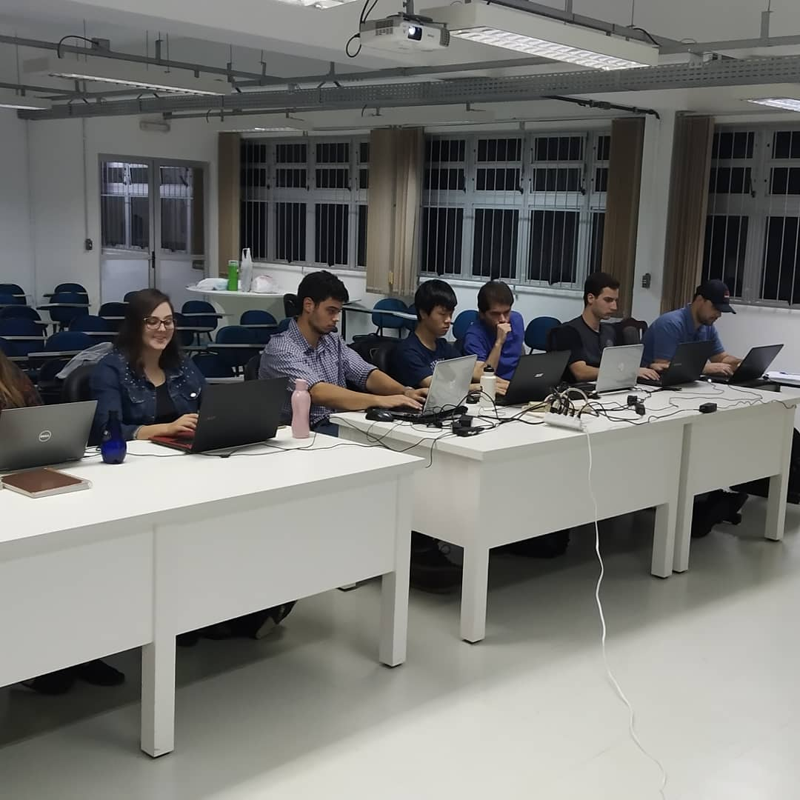 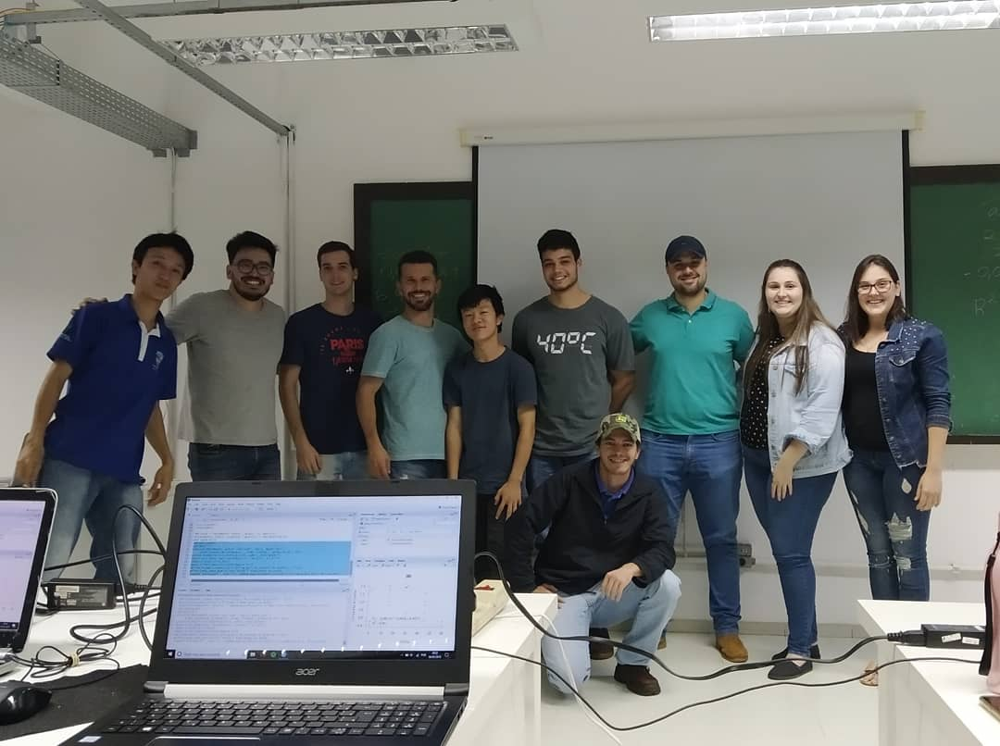 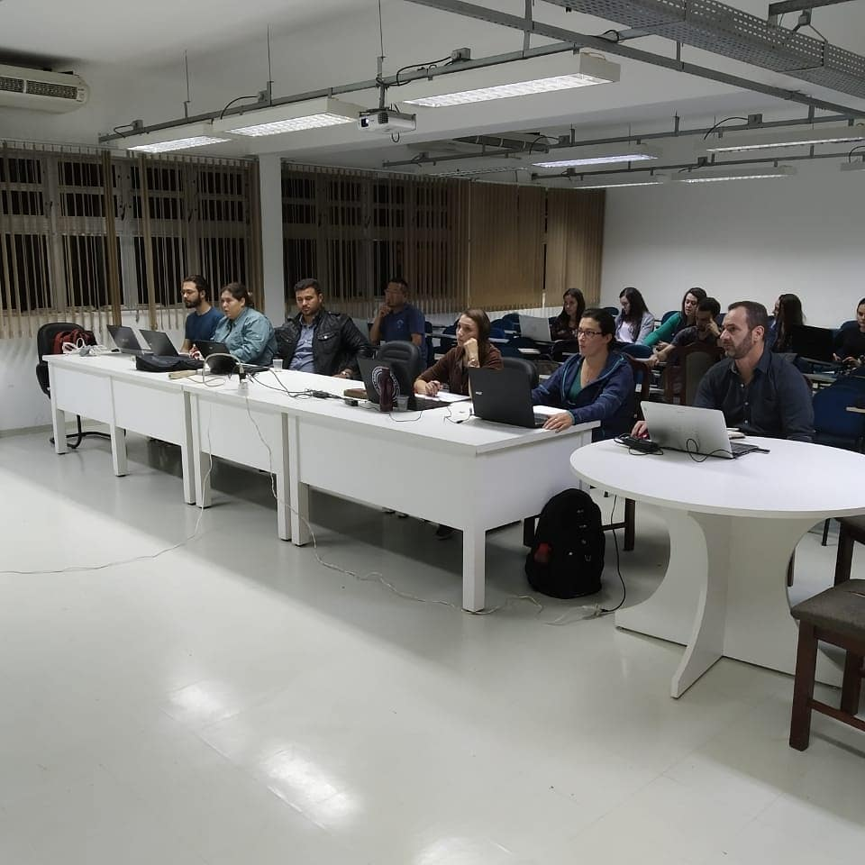
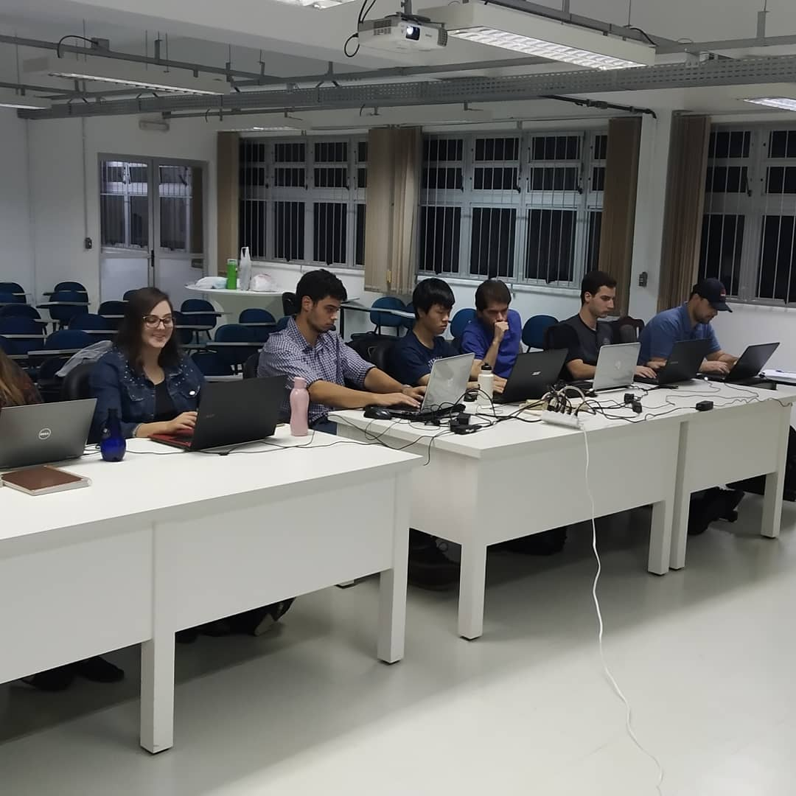 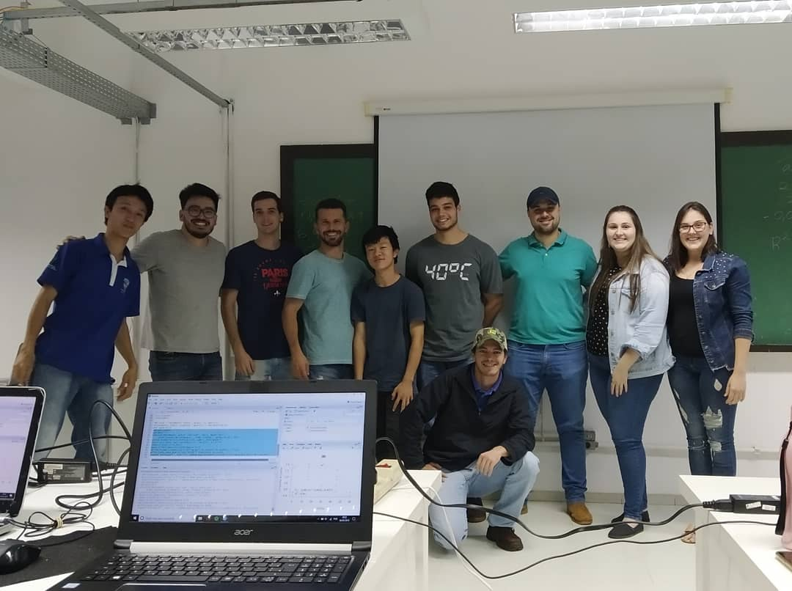 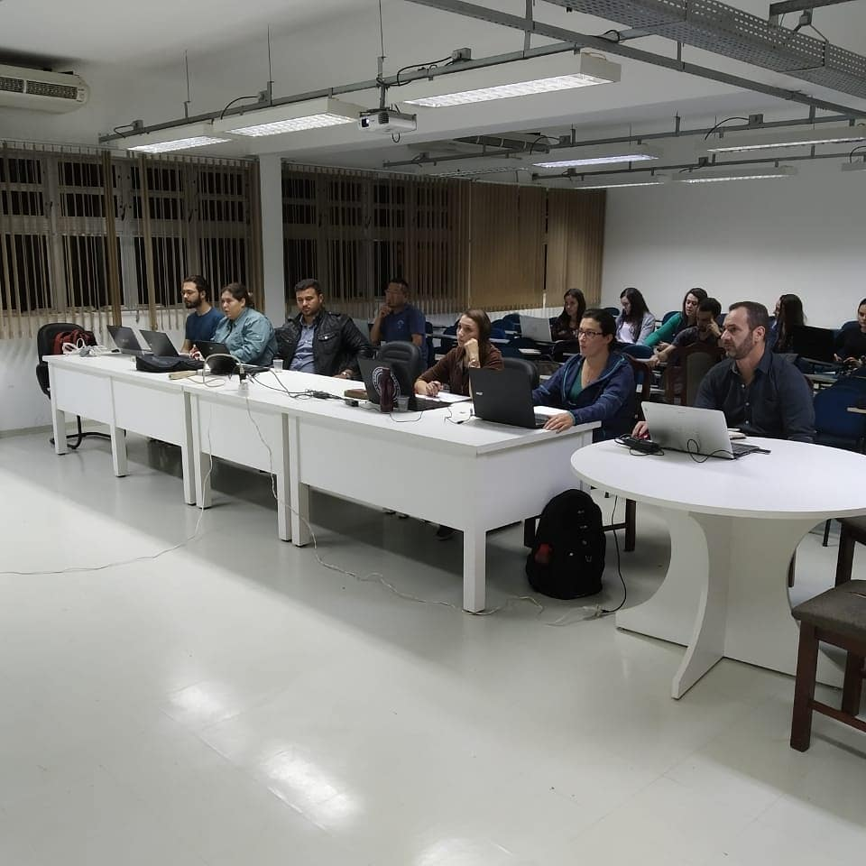
- II Curso básico do R aplicado à Agronomia (Curso ministrado em Março/2019 no departamento de estatística da UEL)
 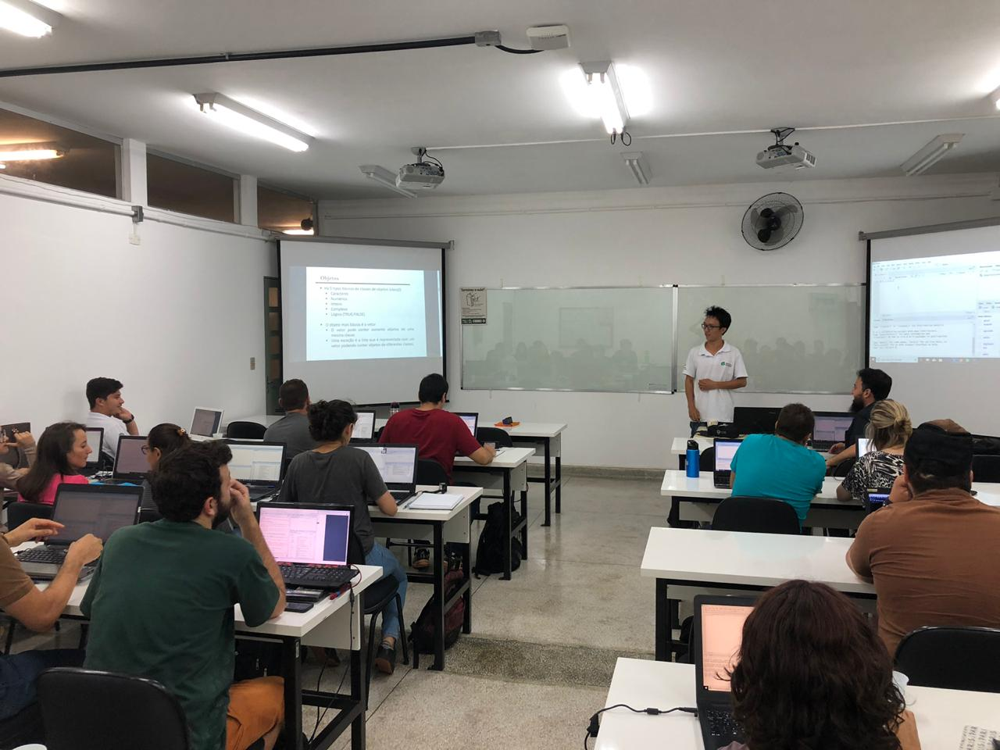
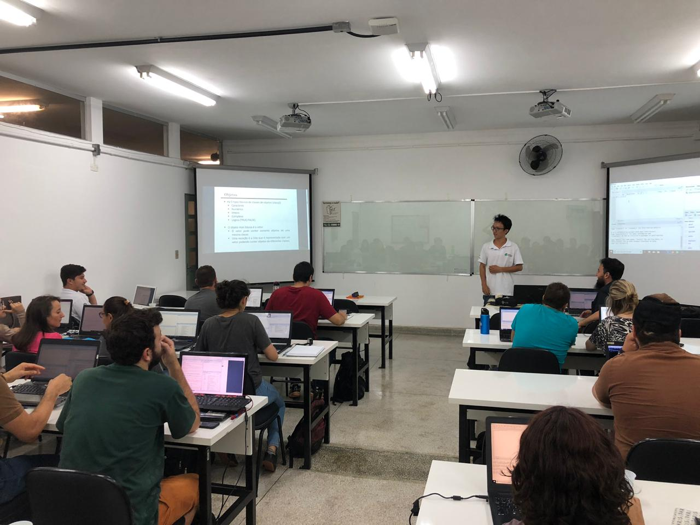  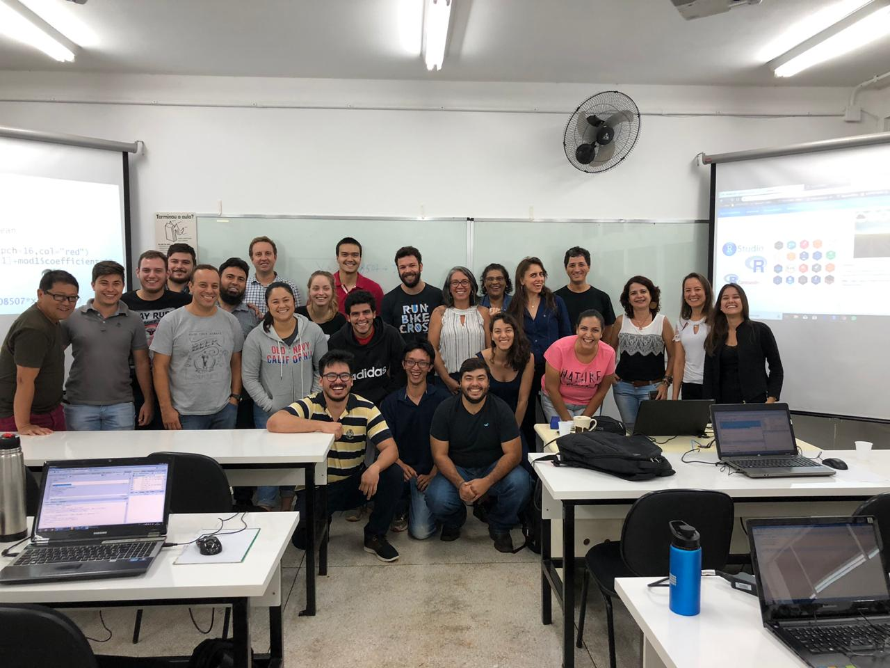
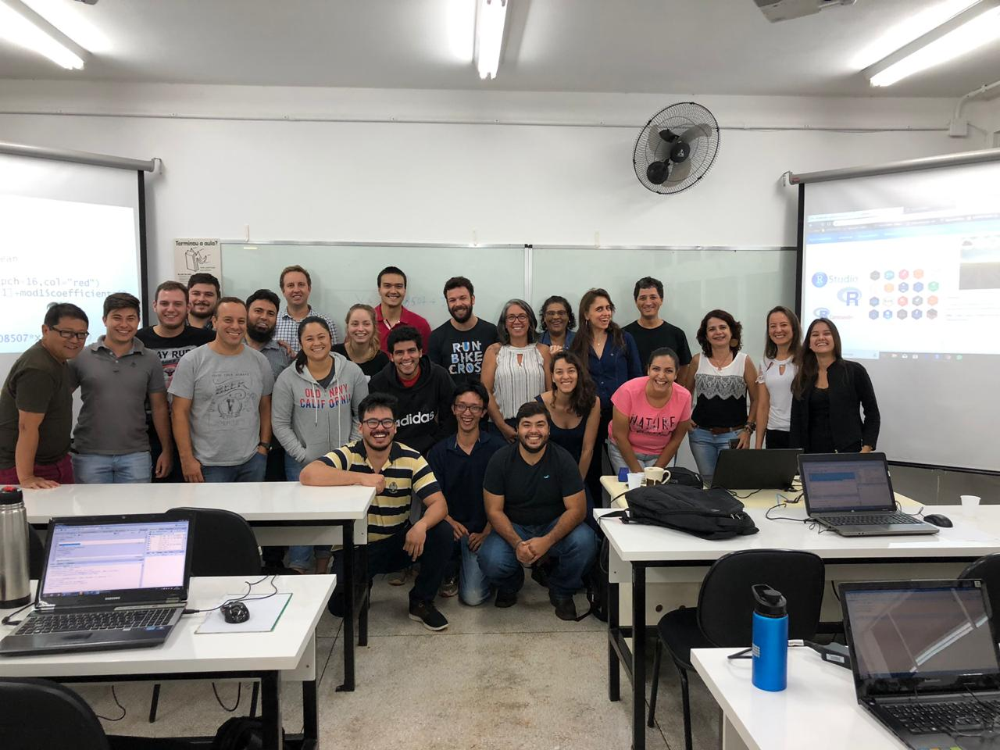
- Criação de documentos dinâmicos utilizando o Markdown do software R (Curso ministrado em Setembro/2018 no departamento de estatística da UEL)
 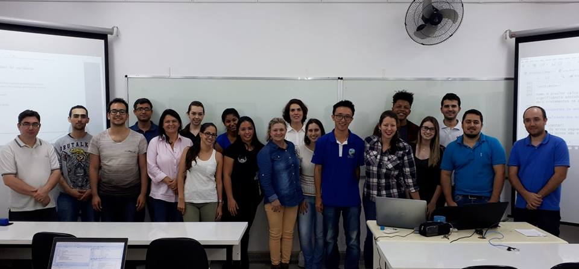
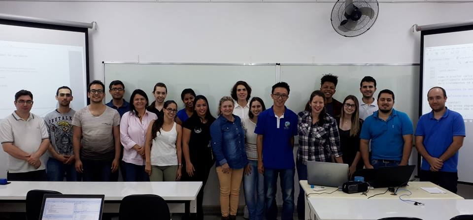 
- Introdução ao Rmarkdown (Curso ministrado em Abril/2018 ao programa de pós-graduação em Agronomia da UEL)